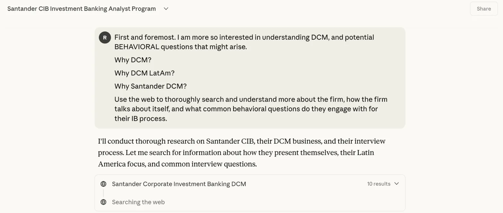

Pivoting Interview Prep: Consulting to Finance
I have an upcoming interview for a Santander CIB Investment Banking Analyst Program, specifically for their DCM (Debt Capital Markets) division. This is different from the consulting interviews I’ve been preparing for—finance interviews require understanding specific firms, technical knowledge about debt markets, and different types of behavioral questions.
Since I’ve been using AI for consulting prep, I decided to test whether Claude and Perplexity could help me pivot to finance interview preparation.

Claude conducting research on Santander’s DCM business and interview approach
The Prompts I Used
Initial Research Request to Claude
My first prompt:
“First and foremost, I am more so interested in understanding DCM, and potential BEHAVIORAL questions that might arise.
Why DCM? Why DCM LatAm? Why Santander DCM?
Use the web to thoroughly search and understand more about the firm, how the firm talks about itself, and what common behavioral questions do they engage with for their IB process.”
Claude responded:
“I’ll conduct thorough research on Santander CIB, their DCM business, and their interview process. Let me search for information about how they present themselves, their Latin America focus, and common interview questions.”
It then ran searches for: - “Santander Corporate Investment Banking DCM” (10 results) - Started searching the web for additional information
Perplexity Deep Dive
I also used Perplexity’s research feature with multiple targeted searches:
- “Santander CIB debt capital markets”
- “Santander investment banking culture values”
- “Santander CIB Latin America strategy”
Perplexity Research tool found 128 sources including: - Debt Capital Markets | Santander Corporate & Investment Banking - From personalization to social values: what is shaking up investment [banking] - Macro & Strategy Research - The past, present and future of debt capital markets - [PDF] Culture Report 2019 - Banco Santander - Santander US Capital Markets
Perplexity gathering and reviewing sources on Santander DCM
What Actually Helped
Firm-Specific Research
Both tools pulled relevant information about Santander’s positioning: - Their focus on Latin America markets and how that differentiates them - Recent deals and market activity in DCM - Corporate values and culture statements - Strategic priorities in debt capital markets
This gave me talking points for “Why Santander” that were specific rather than generic.
Understanding DCM vs. Other IB Divisions
The AI helped clarify: - What DCM analysts actually do day-to-day - How DCM differs from M&A or equity capital markets - Why someone might choose DCM over other finance paths - Technical concepts I needed to understand (bond pricing, credit ratings, syndication)
Behavioral Question Preparation
The tools suggested finance-specific behavioral questions that differ from consulting: - “Walk me through a DCF” (technical behavioral) - “Why debt capital markets vs. other finance roles?” - “How do you handle working with difficult clients on tight deadlines?” - “Tell me about a time you analyzed complex financial information”
These are different from consulting’s case-focused approach.
Identifying Knowledge Gaps
The research helped me realize what I didn’t know: - Specific debt instruments Santander specializes in - Recent Latin American market trends affecting DCM - Technical terminology I needed to learn - The difference between investment-grade and high-yield debt origination
Significant Limitations
Surface-Level Firm Knowledge
The biggest problem: AI gives you the information that’s publicly available on corporate websites and general industry sources. It can’t tell you: - What Santander’s DCM team culture is actually like - Specific deals they’re working on that aren’t public - Internal priorities that aren’t in press releases - What actually impresses their interviewers vs. what sounds good on paper
According to Wall Street Oasis research on IB recruiting, the candidates who succeed show knowledge that goes beyond what AI can find—insider perspectives from networking, recent deal gossip, and understanding of team dynamics.
Generic Behavioral Answers
When I asked Claude to help refine my answers to “Why DCM?”, it produced polished but generic responses: - “I’m drawn to the analytical rigor of debt markets…” - “The complexity of structuring transactions appeals to me…” - “I want to work at the intersection of capital markets and corporate strategy…”
These sound like everyone else’s AI-polished answers. The interviewers at Santander have probably heard variations of these from dozens of candidates using similar tools.
Can’t Teach Technical Skills
AI can explain what a DCF is, but it can’t help you build the muscle memory of actually modeling one under time pressure. It can’t simulate the experience of being asked to walk through a valuation on a whiteboard while someone watches.
Finance interview prep resources emphasize that technical skills require hands-on practice with actual models, not just conceptual understanding.
Outdated Information
Some of the sources Perplexity pulled were from 2019 (the Culture Report). The finance industry moves quickly—strategies, priorities, and team structures change. Relying on AI-found sources without verifying recency is risky.
Misses Networking Insights
The most valuable interview prep for finance comes from talking to people who work at the firm or in similar roles. AI can’t replace: - Coffee chats with current Santander analysts - Alumni connections who know the interview process - Understanding what specific interviewers care about - Getting feedback on your story from people in the industry
Consulting Prep vs. Finance Prep with AI
What Transfers
Some aspects of using AI for consulting prep apply to finance: - Organizing practice materials and tracking progress - Getting quick explanations of concepts - Structuring answers using frameworks - Identifying areas where you need more preparation
What’s Different
Finance interviews require different AI usage:
Technical Knowledge: Consulting is more about frameworks and problem-solving approach. Finance requires specific technical knowledge (financial modeling, valuation methods, market mechanics) that you need to practice hands-on.
Firm Research: Consulting firms are more about “fit” and problem-solving ability. Finance firms want to know you understand their specific business lines, recent deals, and market positioning.
Answer Style: Consulting wants structured, MECE thinking demonstrated verbally. Finance wants technical competence demonstrated through modeling and concise, confident answers about markets.
Preparation Balance: For consulting, AI can handle maybe 40% of prep (frameworks, structure, case types). For finance, it’s more like 20%, you need more hands-on technical practice and human networking.
My Actual Approach
Using AI for Initial Research Phase
I’m using Claude and Perplexity to: - Get baseline understanding of Santander’s DCM business - Compile a list of recent deals and market trends - Understand basic DCM technical concepts - Draft initial answers to behavioral questions
But I treat this as the starting point, not the final product.
Following Up with Human Sources
After AI research, I’m: - Reaching out to Santander employees on LinkedIn - Talking to friends in investment banking about DCM - Getting my behavioral answers reviewed by people in finance - Asking specific questions about Santander’s Latin America focus
Technical Skill Building
For the technical components, AI isn’t much help. I’m: - Working through actual DCF models - Practicing explaining valuation methods out loud - Reviewing recent debt deals and their structures - Doing mock technical questions with finance friends
Verifying Everything
Any specific fact or claim from AI research, I verify: - Check Santander’s official investor relations materials - Look up recent news about their DCM business - Confirm market trends with multiple sources - Cross-reference technical concepts with textbooks
The AI can point me toward information, but I don’t trust it without verification.
Final Assessment
Using AI to pivot from consulting to finance interview prep is helpful but limited. It’s good for: - Quick baseline research on the firm and role - Understanding how finance interviews differ from consulting - Getting initial structure for behavioral answers - Identifying what you don’t know
But it’s insufficient for: - Developing real technical skills - Understanding firm-specific culture and priorities - Creating distinctive, memorable answers - Getting the insider knowledge that networking provides
Finance interviews, even more than consulting, require human connections and hands-on technical practice. AI can accelerate the research phase, but it can’t replace the core preparation activities that actually matter.
The risk is thinking that comprehensive AI research is enough. It’s not. The candidates who get offers at places like Santander DCM are the ones who combine efficient research with deep technical preparation and strong industry networks—things AI can’t provide.